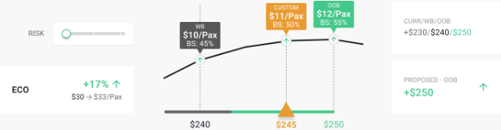
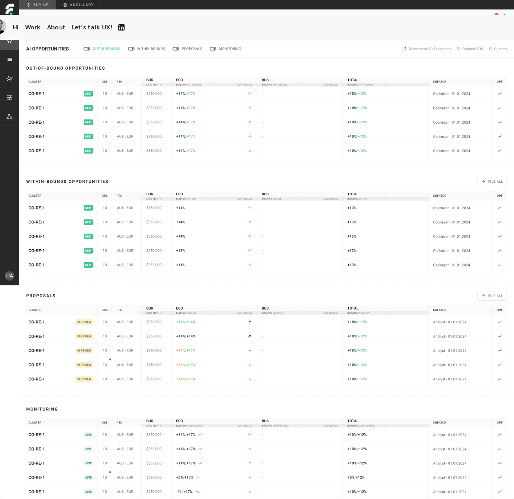
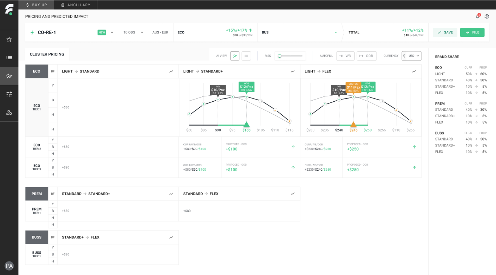
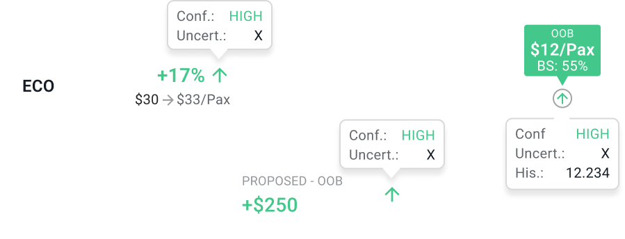
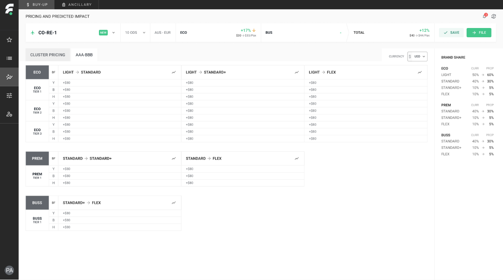
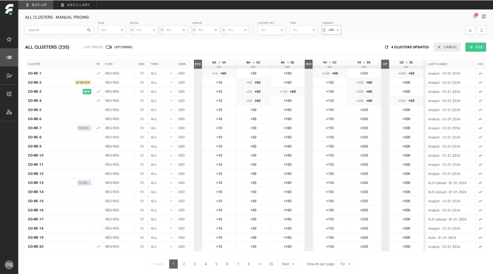
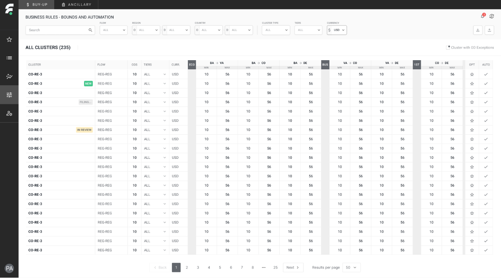

FarePoint - airline branded fare and ancillary pricing optimization
I gave pricing analysts the confidence to move off a conservative default.
Replacing reactive, conservative, spreadsheet-based fare pricing with a proactive, AI-driven workflow - one that turns a model's output into a curve an analyst can question, test, and stand behind. This case study covers use case one: branded fare pricing.
AI identifies → Analyst proposes → Manager approves
CORE INTERACTION
Willingness-to-pay curve
MY ROLE
Product design, end to end
What problem does it solve?
Before FarePoint, branded-fare pricing ran entirely through spreadsheets. A revision and its approval together took weeks - long enough that by the time a price change went live, the demand shift that justified it had often already passed. The team wasn't just slow to react; it usually missed the window to act at all, and every missed window meant a fare stuck at a price nobody had actually chosen.
That slowness had a second, quieter cost: because nobody could see what a bolder price would actually risk or earn, prices stayed conservative by default. There was no tool that made the trade-off between risk and revenue visible, so the safe number always won - even when the data said a bolder one would pay off.
BEFORE
Pricing lived in exported spreadsheets
Revision → approval: weeks
Reactive, and still usually too late
No visible risk/reward trade-off
Prices defaulted to conservative
AFTER
One shared pricing interface
Revision → approval: minutes
Proactive - opportunities surfaced daily
Revenue/conversion impact per price point
Prices reflect actual, visible confidence
Interviews and workflow-mapping sessions with two roles - the analyst who proposes, the manager who approves - set the frame for everything that follows.
Users
Everything downstream was designed around two people passing the same decision back and forth - the analyst who proposes, the manager who approves. Their incentives don't always line up: analysts are pushed to find revenue upside, managers are accountable if a bolder price backfires. The interface had to hold both jobs credible at once, so neither role could treat the other's screen as a black box.
That handoff shows up everywhere in the design - a proposal has to carry enough context that a manager can approve it without a follow-up conversation, and a rejection has to explain itself well enough that the analyst doesn't just resubmit the same number.
JA
Jane
ANALYST
GOALS
Identify opportunities
Reprice based on AI suggestions
Manually reprice clusters if needed
Propose new prices
EM
Emma
MANAGER
GOALS
Review and file analyst proposals
Monitor the performance of filed clusters
Manually reprice clusters if needed
A shared vocabulary, built to scale
Every price in the product is one of three states - current, AI-optimal, or custom override - rendered in the same colour everywhere, so reading a price never means re-learning what a colour means on a new screen.
Airlines don't share a pricing philosophy, and portfolios range from a few hundred OD pairs to several thousand. Getting a single component to hold up across that range meant going deep on airfare pricing itself first - fare-family transitions, RBD structures, bound governance - so every pattern stayed legible from one override to a 235-cluster table.

WORKING PRINCIPLE
Transparency and confidence only earn trust when they're paired with resilience and agency. A system that explains its reasoning but won't let someone push back isn't trustworthy - it's just persuasive. Every confidence signal in this product has a matching override, somewhere close by.
Here's how the flow actually works:
Following the flow
01. PRIORITIZE
Identifying and prioritizing opportunities
The analyst's day starts on one ranked list, not a spreadsheet export: clusters the model has flagged, split into Out-of-Bounds, Within-Bounds, Proposals, and Monitoring - each independently toggled on or off. A confidence arrow sits next to every number, so priority reads at a glance instead of requiring a scan of raw figures.

AI Opportunities - ranked, filterable, and toggled by state
02. PRICE
Pricing the opportunities
A cluster opens into a pricing table organized by cabin and tier - collapsed rows show the model's recommended CURR / WB / OOB values at a glance, before anyone commits to going deeper.
Expanding a tier turns that recommendation into a willingness-to-pay curve: the same distribution that arrives from the model as raw output becomes colour-coded, clickable price points, each one carrying its own confidence and predicted revenue impact.
Selecting a point returns that estimate on the spot. Setting a custom price is a fully supported state on the same curve, not a workaround around it - the screenshot below shows both a model-recommended OOB point and an analyst's custom point, side by side, each with its own brand-share read.

Same curve, two transitions - one still on the model's OOB point, one moved to a custom price
Every price point carries the same confidence tooltip, whatever level you're looking at it from - a whole cabin, a single transition, or one exact point on the curve. Hovering it surfaces the reasoning: how many historical fare changes the model is drawing on, whether the window is peak or off-peak season, and the resulting uncertainty band. "High confidence" is never something an analyst has to take on faith.

03. HUMAN AGENCY
Full control - exceptions and manual pricing
Not every decision has to run through the model. The same control extends to fully manual pricing - down to a single OD pair inside a cluster, or across the whole portfolio from an all-clusters view - for the moments an advanced user disagrees with the AI outright. It's the resilience half of the transparency principle from earlier: a tool people can override without a fight is one they'll actually trust.

One exception, inside an otherwise AI-priced cluster

All Clusters - manual pricing at full-portfolio scale, 235 clusters and counting
04. GOVERNANCE
Control over bounds and user permissions
Above the individual cluster, Business Rules lets a manager set min/max bounds and automation toggles once for the whole portfolio, so guardrails don't get re-argued proposal by proposal. Role-based permissions sit alongside - who can propose, who can approve, who can touch bounds at all - so governance isn't just about the prices, it's about who's allowed to move them.

Business Rules - bounds and automation, set once for the portfolio
05. TESTING
Testing the direction before committing to it
Every price point carries the same confidence tooltip, whatever level you're looking at it from - a whole cabin, a single transition, or one exact point on the curve. Hovering it surfaces the reasoning: how many historical fare changes the model is drawing on, whether the window is peak or off-peak season, and the resulting uncertainty band. "High confidence" is never something an analyst has to take on faith.
Analysts
Managers
Leadership
06. OUTCOME
What moved, and what it proved
Figures below are from one airline partner's rollout of the branded-fare module - the first client to move off spreadsheets onto FarePoint.
Numbers explain what changed. Workshops with analysts, once the curve had been live for a while, explained why - and surfaced patterns neither the research nor the model had predicted.
+7%
buy-across revenue from branded-fare repricing
-90%
time from repricing decision to live, versus the spreadsheet process
100%
analyst adoption - the spreadsheet workflow was fully retired
01
Exploration became deliberate
Analysts started testing multiple points on the curve before committing, rather than accepting the first number shown - the curve turned a one-shot decision into a short, visible negotiation with the model.
02
Risk tolerance rose, measurably
With the trade-off quantified instead of assumed, analysts filed more out-of-bounds proposals than within-bounds ones - the opposite of the conservative default the old process produced.
03
Strategic underpricing, on purpose
The most interesting pattern was a minority one: analysts sometimes chose to deliberately under-price a branded fare family to stay competitive against a rival's fare on the same route - a call the model would never make on its own, but one the interface let them make with full information instead of instinct.